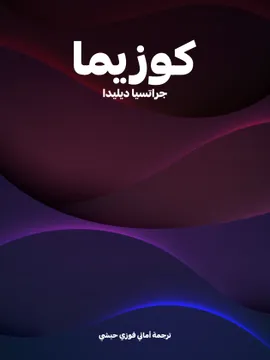

كوزيما

قراءة عربية أصلية محددة النطاق في الصفحات 7، 9 من ملف PDF المرتبط، وليست تلخيصا كاملا للكتاب. نناقش ما تدعمه هذه المقاطع فقط.
سيرة فتاة مختلفة في سردينيا
تشرح مقدمة المترجمة أن «كوزيما» رواية سيرة ذاتية كتبتها ديليدا عام 1926 وعثر عليها الورثة بعد وفاتها، تحكي طفولة فتاة محاربة في بيئة تضيق على الفتيات، وشغفها المبكر بالقراءة وصراعها لتنال تعليمًا يتيح لها الكتابة. ثم ينتقل النص المقروء إلى الفصل الأول من الرواية نفسها، حيث تستعيد الراوية منزل الطفولة بدقة متحفظية: حجرتان في كل طابق، دَرَج من الجرانيت والأردواز، ومطبخ هو أكثر الحجرات دفئًا وحياة.
زاوية وحدود القراءة
قراءة في مقدمة المترجمة أماني فوزي حبشي وفي مطلع الفصل الأول من الصفحات 7 إلى 9. الأحكام التاريخية عن تأليف الرواية ونشرها منقولة عن المترجمة لا عن المؤلفة، وما ورد عن شخصية ديليدا هنا هو ما تقدمه المقدمة فقط. وصف المنزل من نص الرواية المترجم، ولا نعمم منه على بقية الفصول.
الطبعة والقراءة
هذه النسخة من الكتاب صادرة ومتاحة مجانًا بموجب اتفاق قانوني بين مؤسسة هنداوي والسيدة الدكتورة أماني فوزي حبشي.
تنزيل PDF المجاني ↓ القراءة والمصدر الرسمي ↗